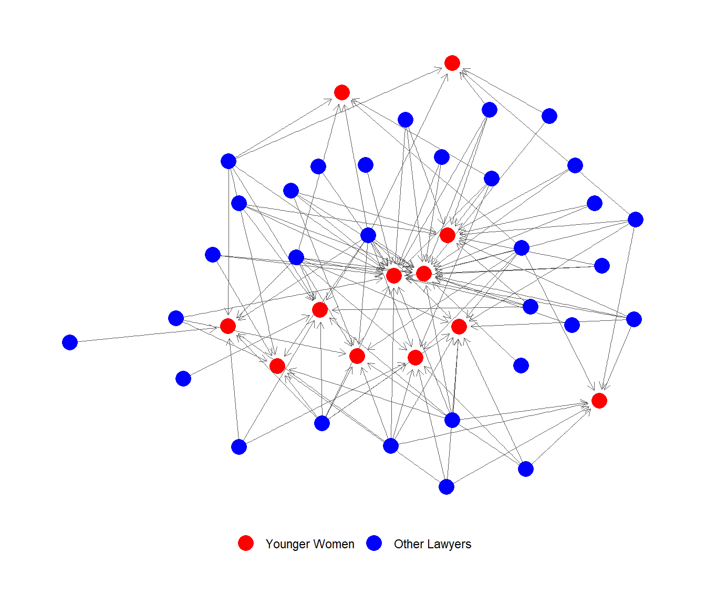

Code
[1] 29 34 39 48 51 57 59 60 61 67 69 71A great question asked in class goes as follows: What if I want to create a subgraph based on selecting a subset of a nodes, and then the other nodes in the graph that are that set of node’s in-neighbors?
Let’s see how that would work.
First, we create a vector with the node ids of our focal nodes, which will be women under 40 in the law_advice network from the package networkdata.
[1] 29 34 39 48 51 57 59 60 61 67 69 71Second, we need to collect the node ids of the people who point to these set of nodes in a list object; that is, each of these node’s in-neighbors. For that, we use the igraph function neighbors, wrapped into the handy dandy lapply meta-function in R:
This creates a list of length equal to the number of nodes in the object yw containing vectors of the node ids of each of their in-neighbors as elements. The beauty of a list object is that it is an object that can hold other objects (vectors, matrices, igraph graph objects, etc.) as members (it can also have other lists as members, with lists all the way down).1The argument “mode” (“in” or “out” for directed graphs), tells the igraph function neighbors which kind neighbors you want (not necessary for undirected graphs). Here we want the in-neighbors, so mode = “in”.
[1] 12[[1]]
+ 17/71 vertices, from d1a9da7:
[1] 4 10 12 15 16 17 19 26 27 28 34 36 41 42 45 48 70
[[2]]
+ 25/71 vertices, from d1a9da7:
[1] 7 10 12 13 14 15 16 17 19 22 26 27 28 29 33 36 42 44 45 46 48 56 60 61 64
[[3]]
+ 17/71 vertices, from d1a9da7:
[1] 13 17 30 40 41 42 48 51 52 55 56 57 65 66 67 69 71
[[4]]
+ 4/71 vertices, from d1a9da7:
[1] 16 17 39 42
[[5]]
+ 2/71 vertices, from d1a9da7:
[1] 58 59
[[6]]
+ 11/71 vertices, from d1a9da7:
[1] 27 39 41 51 55 56 62 65 66 67 71Now we need to create a vector of the unique ids of these nodes. To do this, we just to “unlist” all of the node ids to create a simple vector from the list object.
The unlist native R function does that for us, taking a list as input and returning all of the elements inside each of the separate objects stored in the list as output. Here we wrap that call in the unique native R function to eliminate repeats (common in-neighbors across women):
[1] 4 10 12 15 16 17 19 26 27 28 34 36 41 42 45 48 70 7 13 14 22 29 33 44 46
[26] 56 60 61 64 30 40 51 52 55 57 65 66 67 69 71 39 58 59 62 35Of course, because the younger women are their own in-neighbors, they are included in this vector, so we need to get rid of them:
[1] 4 10 12 15 16 17 19 26 27 28 36 41 42 45 70 7 13 14 22 33 44 46 56 64 30
[26] 40 52 55 65 66 58 62 35We use the native command setdiff to find the elements in vector yw_in that are not contained in the vector of young women ids yw or the difference between the set of nodes ids stored in yw_in and the set of node ids stored in yw.
Now that we have the vector of ids of the focal nodes and the vector of ids of their in-neighbors, we are ready to create our subgraph! All we need to do is specify we want both the younger law firm women and their in-neighbors in our node-induced subgraph:
We can even specify a new vertex attribute, differentiating the focal network from the in-neighbor network.
$status
[1] 1 1 1 1 1 1 1 1 1 1 1 1 1 1 1 1 1 1 1 1 2 2 2 2 2 2 2 2 2 2 2 2 2 2 2 2 2 2
[39] 2 2 2 2 2 2 2
$gender
[1] 1 1 1 1 1 1 1 1 1 1 1 1 2 1 2 1 1 2 1 1 2 1 1 1 2 1 2 2 2 1 1 1 2 1 2 2 2 1
[39] 2 1 1 2 2 1 2
$office
[1] 1 2 1 1 1 2 3 1 1 1 1 1 1 2 1 2 2 1 2 1 1 1 1 1 3 1 2 1 2 1 1 1 1 2 2 1 1 1
[39] 1 1 1 1 1 1 1
$seniority
[1] 31 29 25 24 22 1 21 20 23 19 9 15 13 11 10 7 8 8 8 5 6 6 5 4 5
[26] 3 3 1 4 4 3 3 3 3 2 2 2 2 2 2 1 1 1 1 1
$age
[1] 59 63 53 52 57 56 48 46 50 46 49 41 47 38 38 39 37 36 33 43 37 34 31 31 53
[26] 38 42 35 29 29 34 38 33 33 30 31 34 32 45 28 43 35 38 31 26
$practice
[1] 2 2 2 2 1 2 2 2 2 2 1 1 1 2 2 1 1 2 2 1 1 1 1 2 2 2 2 2 1 1 1 1 1 1 1 2 2 2
[39] 2 1 1 1 1 2 1
$law_school
[1] 3 3 3 2 2 1 3 1 1 1 3 3 1 2 3 3 3 2 3 3 1 1 2 2 1 3 2 3 3 3 3 2 2 3 2 2 3 2
[39] 2 3 3 2 3 2 2
$net_status
[1] 1 1 1 1 1 1 1 1 1 1 1 1 2 2 2 2 2 2 2 2 2 2 2 2 2 2 2 2 2 2 2 2 2 2 2 2 2 2
[39] 2 2 2 2 2 2 2Finally, we create an edge deleted subgraph including only the incoming advice edges from nodes who are not younger women in the firm to younger women and deleting everything other link:
e.rem <- E(g)[V(g)[net_status == 1] %->% V(g)[net_status == 1]]
# selecting edges from younger women to younger women
g.r <- delete_edges(g, e.rem) # removing edges
e.rem <- E(g.r)[V(g.r)[net_status == 1] %->% V(g.r)[net_status == 2]]
# selecting edges from younger women to non-younger women
g.r <- delete_edges(g.r, e.rem) # removing edges
e.rem <- E(g.r)[V(g.r)[net_status == 2] %->% V(g.r)[net_status == 2]]
# selecting edges from non-younger women to non-younger women
g.r <- delete_edges(g.r, e.rem) # removing edges
Iso <- which(degree(g.r) == 0) # selecting isolates
g.r <- delete_vertices(g.r, Iso) # removing isolatesHere we can see both the delete_edges and delete_vertices functions from igraph in action. Both take some graph object as input followed by either an edge sequence (in this case produced by E(g))or a vector of node ids respectively. In both cases those particular edges or nodes are removed from the graph.
The other neat functionality we see on display here is the igraph %->% operator for directed graph edges (the equivalent for undirected graphs is the double dash %–%). This allows us to select a set of edges according to a vertex condition (e.g., homophilous (same group) edges or edges that link a member from group a to a member from group b).
So the code chunk:
+ 69/436 edges from 4f1bd82:
[1] 1-> 4 1-> 5 1-> 6 1-> 9 1->10 1->11 1->12 2-> 3 3-> 8 3-> 9
[11] 3->12 4-> 1 4-> 3 4-> 5 4-> 6 4-> 7 4-> 8 4-> 9 4->10 4->12
[21] 5-> 4 5-> 7 5-> 8 5-> 9 5->12 6-> 1 6-> 4 6-> 7 6-> 8 6-> 9
[31] 7-> 5 7-> 6 7-> 8 7->11 7->12 8-> 1 8-> 2 8-> 3 8-> 4 8-> 6
[41] 8-> 7 8-> 9 8->10 8->12 9-> 1 9-> 4 9-> 6 9-> 8 9->11 9->12
[51] 10-> 1 10-> 4 10-> 5 10-> 7 10-> 9 10->11 10->12 11-> 1 11-> 7 11-> 8
[61] 11-> 9 11->10 12-> 1 12-> 4 12-> 5 12-> 7 12-> 8 12-> 9 12->11Takes the edge set of the graph g (E(g)) and gives us the subset of edges that go from a vertex with net_status equal to one to another vertex that also has net_status equal to one (in this case edges directed from one of our focal nodes to another one of our focal nodes). This, of course, happens to be all the directed edges linking nodes one through twelve in the network. The same go for the other calls to the same function using different logical combinations of values of net_status between nodes.
FINALLY, can now plot the incoming advice network to younger women (in red):
